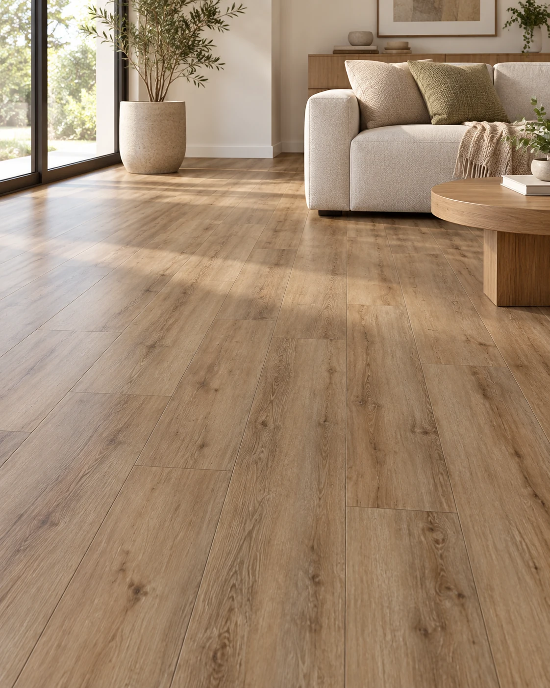

Pisos SPC
Piso SPC click Roble Natural
Piso vinílico rígido con núcleo SPC y sistema de encastre click, para colocación flotante sin pegamento. El proveedor lo propone para interiores residenciales y comerciales y declara resistencia al agua. La web publica rangos de formato y espesor para la línea, por lo que es necesario confirmar la presentación exacta y el rendimiento de la partida de este diseño antes del pedido.
- Diseño / color
- Roble Natural
- Material
- SPC (Stone Plastic Composite)
- Instalación
- Click; colocación flotante sin adhesivo
- Formato informado en web
- 183/230 × 1220/1530 mm (rango de línea; confirmar partida)
- Espesor informado en web
- 4–8 mm (rango de línea; confirmar partida)
- Peso informado en web
- 7,9–13,3 kg/m² (rango de línea)
- Uso
- Interior residencial y comercial
- Rendimiento por caja
- Confirmar presentación exacta del diseño y la partida
- Resistencia informada
- Resistente al agua, según proveedor; verificar instalación y juntas
Disponibilidad FORMA: Sin stock temporal
Consultar precio
Consultar por WhatsAppConfirmamos precio, disponibilidad y entrega antes de cerrar el pedido.
Antes de elegir
Web publica rangos para la familia y PDF local otra combinación específica: no atribuir 6 mm, base IXPE ni 2,23 m²/caja a cada diseño sin confirmación.
OTROS DISEÑOS DE ESTA LÍNEA